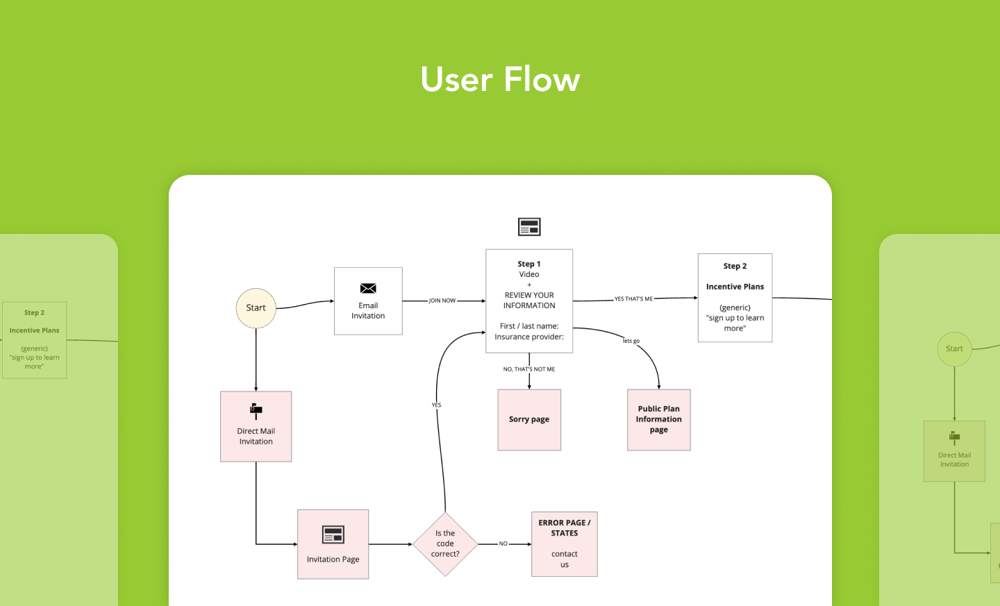
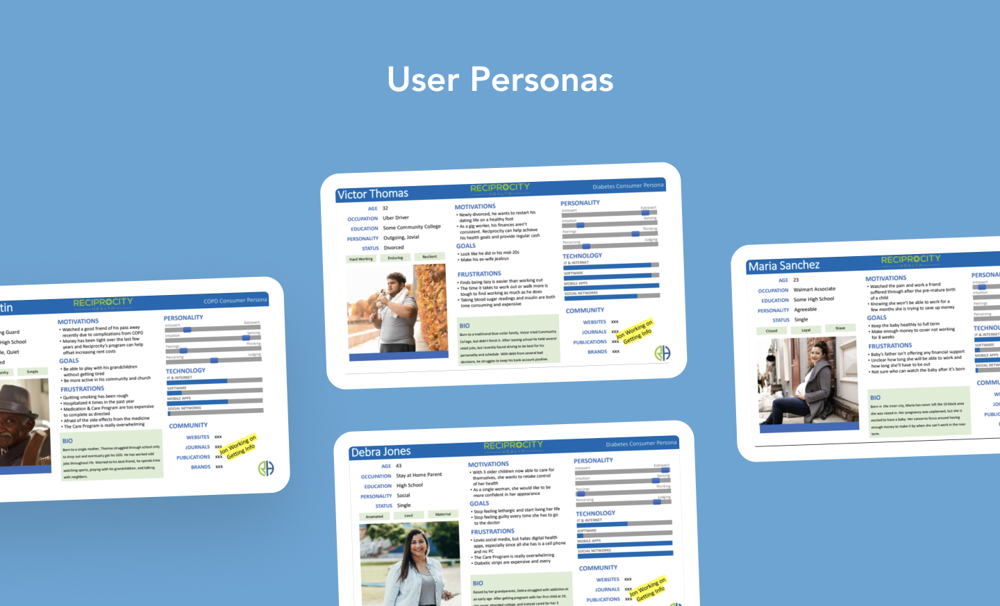
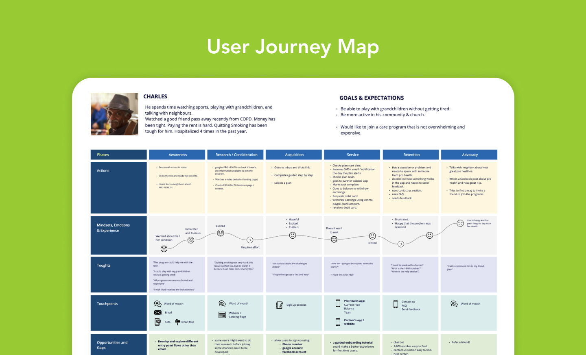
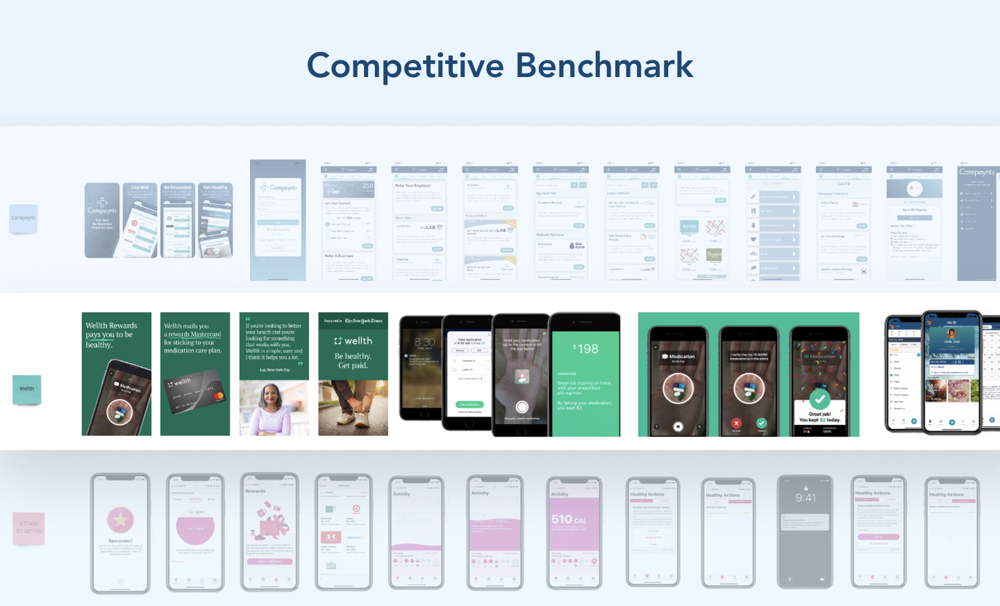
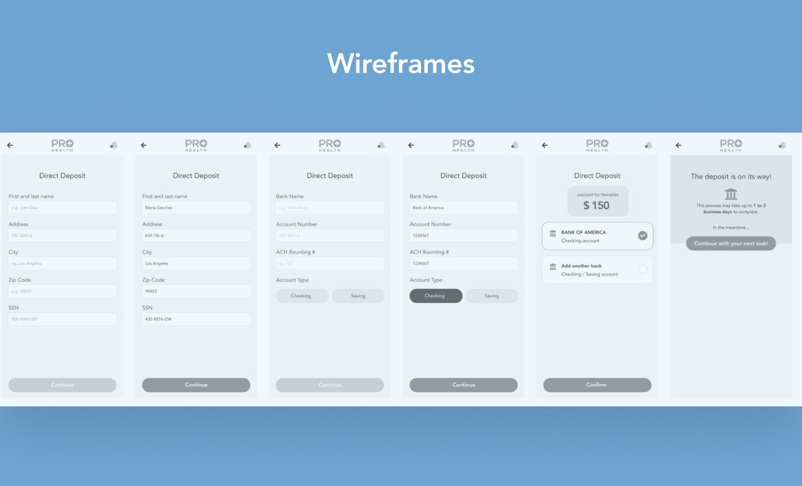
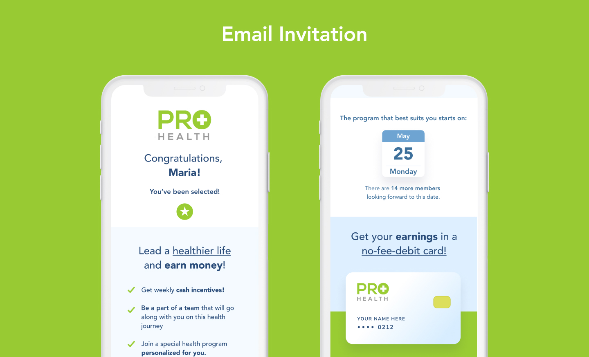
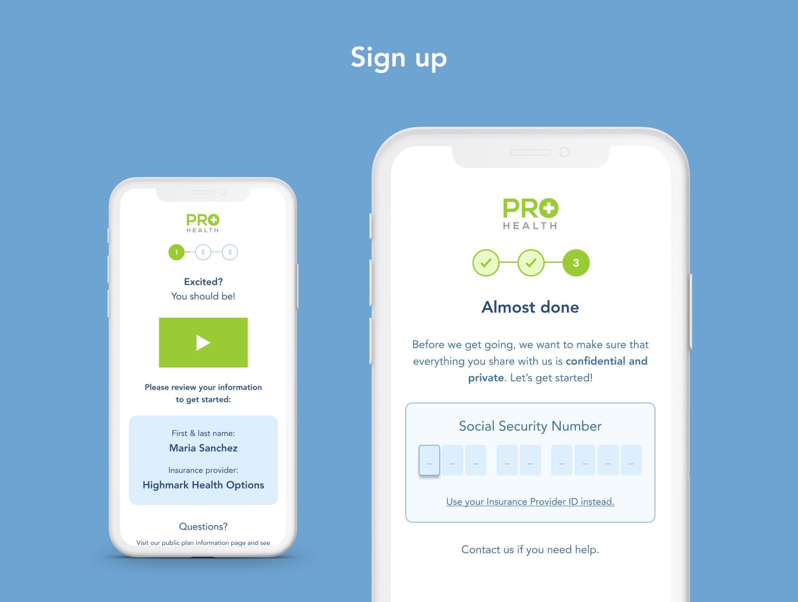
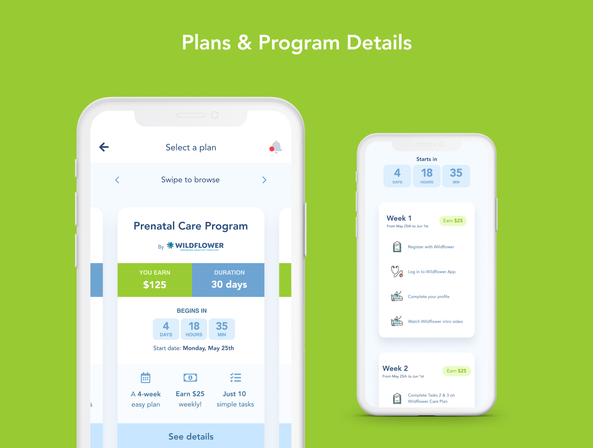
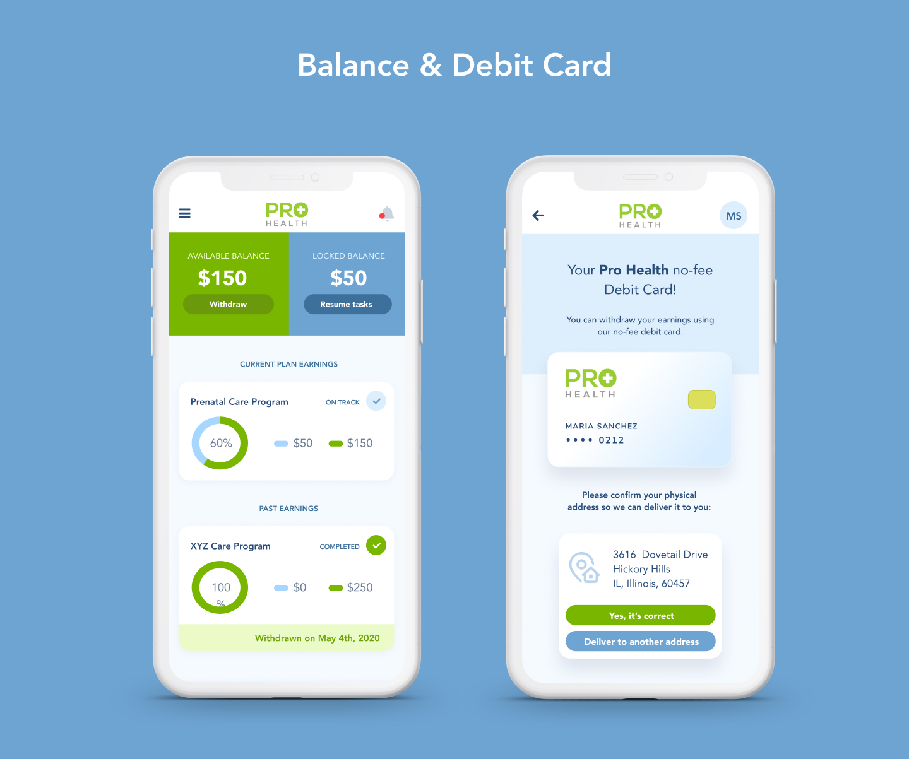

Pro-Health is a health tech company that has a simple premise: if we give people an incentive to make healthy decisions today, we will be able to reduce healthcare costs in the future.
In the United States, nearly 60% of Americans have at least one chronic condition. Of those over 50% do not follow the care program their doctors have required of them to get healthy.
People with Chronic diseases often fail to take proper care of themselves, this causes more health issues, which requires more medical care, which in turn increases the costs of time spent hospitalized.
Insurance companies are interested in people leading a healthier life because this will cause fewer costs to the insurance companies. Hence, they are willing to provide their patients with cash incentives/rewards if they hit certain goals to maintain healthier habits.
Pro-Health will receive potential candidates through insurance partners. Once identified, these patients will get a special link to sign up on the platform.
Once they sign up, they will have pre-selected programs available to them, to lose weight, control blood sugar, etc.
– Understand the company vision and facilitate the product discovery process.
– Build a user journey map to identify gaps and opportunities.
– Create an initial user flow.
– Decide with the client the features that will make the MVP.
– Design and prototype in Figma.
– Usability Testing to validate design decisions.








